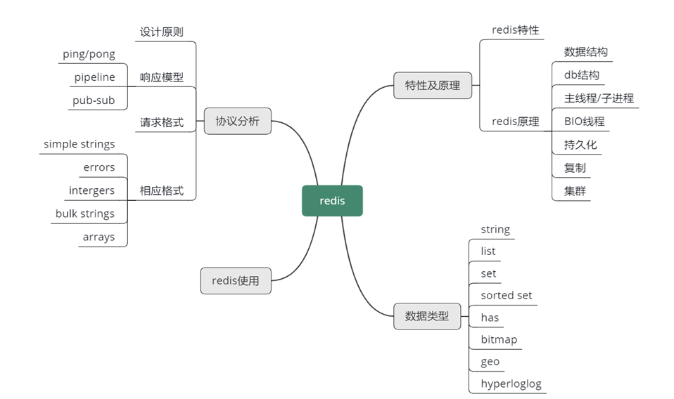

- 00 开篇寄语：缓存，你真的用对了吗？.md
- 01 业务数据访问性能太低怎么办？.md
- 02 如何根据业务来选择缓存模式和组件？.md
- 03 设计缓存架构时需要考量哪些因素？.md
- 04 缓存失效、穿透和雪崩问题怎么处理？.md
- 05 缓存数据不一致和并发竞争怎么处理？.md
- 06 Hot Key和Big Key引发的问题怎么应对？.md
- 07 MC为何是应用最广泛的缓存组件？.md
- 08 MC系统架构是如何布局的？.md
- 09 MC是如何使用多线程和状态机来处理请求命令的？.md
- 10 MC是怎么定位key的.md
- 11 MC如何淘汰冷key和失效key.md
- 12 为何MC能长期维持高性能读写？.md
- 13 如何完整学习MC协议及优化client访问？.md
- 14 大数据时代，MC如何应对新的常见问题？.md
- 15 如何深入理解、应用及扩展 Twemproxy？.md
- 16 常用的缓存组件Redis是如何运行的？.md
- 17 如何理解、选择并使用Redis的核心数据类型？.md
- 18 Redis协议的请求和响应有哪些“套路”可循？.md
- 19 Redis系统架构中各个处理模块是干什么的？.md
- 20 Redis如何处理文件事件和时间事件？.md
- 21 Redis读取请求数据后，如何进行协议解析和处理.md
- 22 怎么认识和应用Redis内部数据结构？.md
- 23 Redis是如何淘汰key的？.md
- 24 Redis崩溃后，如何进行数据恢复的？.md
- 25 Redis是如何处理容易超时的系统调用的？.md
- 26 如何大幅成倍提升Redis处理性能？.md
- 27 Redis是如何进行主从复制的？.md
- 28 如何构建一个高性能、易扩展的Redis集群？.md
- 29 从容应对亿级QPS访问，Redis还缺少什么？.md
- 30 面对海量数据，为什么无法设计出完美的分布式缓存体系？.md
- 31 如何设计足够可靠的分布式缓存体系，以满足大中型移动互联网系统的需要？.md
- 32 一个典型的分布式缓存系统是什么样的？.md
- 33 如何为秒杀系统设计缓存体系？.md
- 34 如何为海量计数场景设计缓存体系？.md
- 35 如何为社交feed场景设计缓存体系？.md
18 Redis协议的请求和响应有哪些“套路”可循？
你好，我是你的缓存课老师陈波，欢迎进入第 18 课时“Redis 协议分析”的学习，本课时主要学习Redis的设计原则、三种响应模式、2种请求格式、5种响应格式。
Redis 协议
Redis 支持 8 种核心数据结构，每种数据结构都有一系列的操作指令，除此之外，Redis 还有事务、集群、发布订阅、脚本等一系列相关的指令。为了方便以一种统一的风格和原则来设计和使用这些指令，Redis 设计了 RESP，即 Redis Serialization Protocol，中文意思是 Redis 序列化协议。RESP 是二进制安全协议，可以供 Redis 或其他任何 Client-Server 使用。在 Redis 内部，还会基于 RESP 进一步扩展细节。
设计原则
Redis 序列化协议的设计原则有三个：
- 第一是实现简单；
- 第二是可快速解析；
- 第三是便于阅读。
Redis 协议的请求响应模型有三种，除了 2 种特殊模式，其他基本都是 ping-pong 模式，即 client 发送一个请求，server 回复一个响应，一问一答的访问模式。
2 种特殊模式：
- pipeline 模式，即 client 一次连续发送多个请求，然后等待 server 响应，server 处理完请求后，把响应返回给 client。
- pub/sub 模式。即发布订阅模式，client 通过 subscribe 订阅一个 channel，然后 client 进入订阅状态，静静等待。当有消息产生时，server 会持续自动推送消息给 client，不需要 client 的额外请求。而且客户端在进入订阅状态后，只可接受订阅相关的命令如 SUBSCRIBE、PSUBSCRIBE、UNSUBSCRIBE 和 PUNSUBSCRIBE，除了这些命令，其他命令一律失效。
Redis 协议的请求和响应也是有固定套路的。
对于请求指令，格式有 2 种类型。
- 当你没有 redis-client，但希望可以用通用工具 telnet，直接与 Redis 交互时，Redis 协议虽然简单易于阅读，但在交互式会话中使用，并不容易拼写，此时可以用第一种格式，即 inline cmd 内联命令格式。使用 inline cmd 内联格式，只需要用空格分隔请求指令及参数，简单快速，一个简单的例子如 mget key1 key2\r\n。
- 第二种格式是 Array 数组格式类型。请求指令用的数组类型，与 Redis 响应的数组类型相同，后面在介绍响应格式类型时会详细介绍。
响应格式
Redis 协议的响应格式有 5 种，分别是：
- simple strings 简单字符串类型，以 + 开头，后面跟字符串，以 CRLF（即 \r\n）结尾。这种类型不是二进制安全类型，字符串中不能包含 \r 或者 \n。比如许多响应回复以 OK 作为操作成功的标志，协议内容就是 +OK\r\n 。
- Redis 协议将错误作为一种专门的类型，格式同简单字符串类型，唯一不同的是以 -（减号）开头。Redis 内部实现对 Redis 协议做了进一步规范，减号后面一般先跟 ERR 或者 WRONGTYPE，然后再跟其他简单字符串，最后以 CRLF（回车换行）结束。这里给了两个示例，client 在解析响应时，一旦发现 - 开头，就知道收到 Error 响应。
- Integer 整数类型。整数类型以 ：开头，后面跟字符串表示的数字，最后以回车换行结尾。Redis 中许多命令都返回整数，但整数的含义要由具体命令来确定。比如，对于 incr 指令，：后的整数表示变更后的数值；对于 llen 表示 list 列表的长度，对于 exists 指令，1 表示 key 存在，0 表示 key 不存在。这里给个例子，：后面跟了个 1000，然后回车换行结束。
- bulk strings 字符串块类型。字符串块分头部和真正字符串内容两部分。字符串块类型的头部， 为 $ 开头，随后跟真正字符串内容的字节长度，然后以 CRLF 结尾。字符串块的头部之后，跟随真正的字符串内容，最后以 CRLF 结束字符串块。字符串块用于表示二进制安全的字符串，最大长度可以支持 512MB。一个常规的例子，“$6\r\nfoobar\r\n”，对于空字串，可以表示为 “$0\r\n\r\n”，NULL字串： “$-1\r\n”。
- Arrays 数组类型，如果一个命令需要返回多条数据就需要用数组格式类型，另外，前面提到 client 的请求命令也是主要采用这种格式。
Arrays 数组类型，以 * 开头，随后跟一个数组长度 N，然后以回车换行结尾；然后后面跟随 N 个数组元素，每个数组元素的类型，可以是 Redis 协议中除内联格式外的任何一种类型。
比如一个字符串块的数组实例，*2\r\n$3\r\nget\r\n$3\r\nkey\r\n。整数数组实例：”*3\r\n:1\r\n:2\r\n:3\r\n"，混合数组实例："*3\r\n :1\r\n-Bar\r\n$6\r\n foobar\r\n”，空数组：”0\r\n”，NULL数组：”-1\r\n”。
协议分类
Redis 协议主要分为 16 种，其中 8 种协议对应前面我们讲到的 8 种数据类型，你选择了使用什么数据类型，就使用对应的响应操作指令即可。剩下 8 种协议如下所示。
- pub-sub 发布订阅协议，client 可以订阅 channel，持续等待 server 推送消息。
- 事务协议，事务协议可以用 multi 和 exec 封装一些列指令，来一次性执行。
- 脚本协议，关键指令是 eval、evalsha 和 script等。
- 连接协议，主要包括权限控制，切换 DB，关闭连接等。
- 复制协议，包括 slaveof、role、psync 等。
- 配置协议，config set/get 等，可以在线修改/获取配置。
- 调试统计协议，如 slowlog，monitor，info 等。
- 其他内部命令，如 migrate，dump，restore 等。
Redis client 的使用及改进
由于 Redis 使用广泛，几乎所有主流语言都有对 Redis 开发了对应的 client。以 Java 语言为例，广泛使用的有 Jedis、Redisson 等。对于 Jedis client，它的优势是轻量，简洁，便于集成和改造，它支持连接池，提供指令维度的操作，几乎支持 Redis 的所有指令，但它不支持读写分离。Redisson 基于 Netty 实现，非阻塞 IO，性能较高，而且支持异步请求和连接池，还支持读写分离、读负载均衡，它内建了 tomcat Session ，支持 spring session 集成，但 redisson 实现相对复杂。
在新项目启动时，如果只是简单的 Redis 访问业务场景，可以直接用 Jedis，甚至可以简单封装 Jedis，实现 master-slave 的读写分离方案。如果想直接使用读写分离，想集成 spring session 等这些高级特性，也可以采用 redisson。
Redis client 在使用中，需要根据业务及运维的需要，进行相关改进。在 client 访问异常时，可以增加重试策略，在访问某个 slave 异常时，需要重试其他 slave 节点。需要增加对 Redis 主从切换、slave 扩展的支持，比如采用守护线程定期扫描 master、slave 域名，发现 IP 变更，及时切换连接。对于多个 slave 的访问，还需要增加负载均衡策略。最后，Redis client 还可以与配置中心、Redis 集群管理平台整合，从而实时感知及协调 Redis 服务的访问。
至此，本节课的内容就讲完了。
在这几节课中，你首先学习了 Redis 的特性及基本原理，初步了解了 Redis 的数据类型、主进程/子进程、BIO 线程、持久化、复制、集群等；这些内容会在后续逐一深入学习。
然后，详细学习了 Redis 的数据类型，了解了字符串、列表、集合、有序集合、哈希、位图、GEO 地理位置、HyperLogLog 基数统计，这 8 种核心数据类型的功能、特点、主要操作指令及应用场景。
接下来，你还熟悉了 Redis 协议，包括 Redis 协议的设计原则、三种响应模型，2 种请求格式和 5 种响应格式。
最后，以 Java 语言为例，你还了解了 Redis client 的对比、选择及改进。
你可以参考这个思维导图，对这些知识点进行回顾和梳理。
